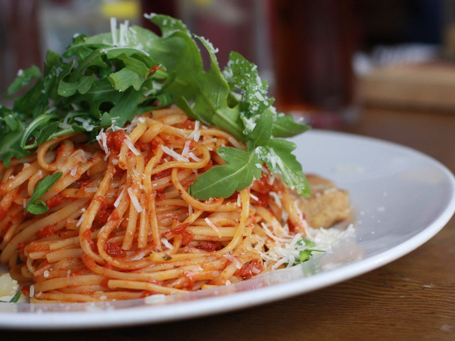
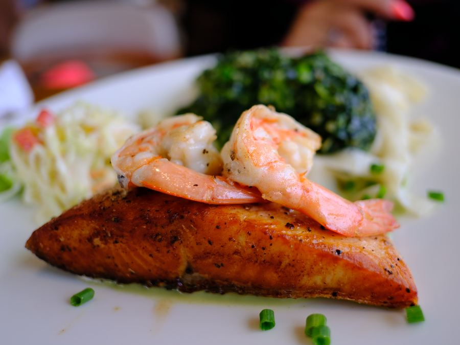
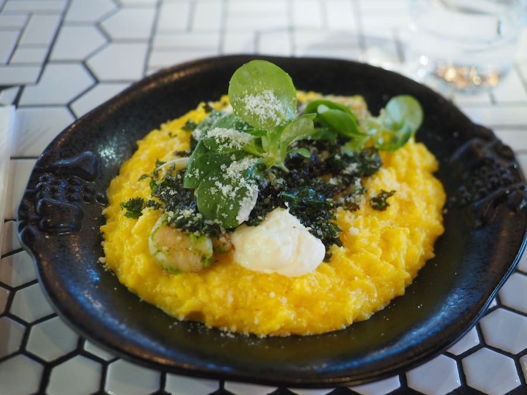
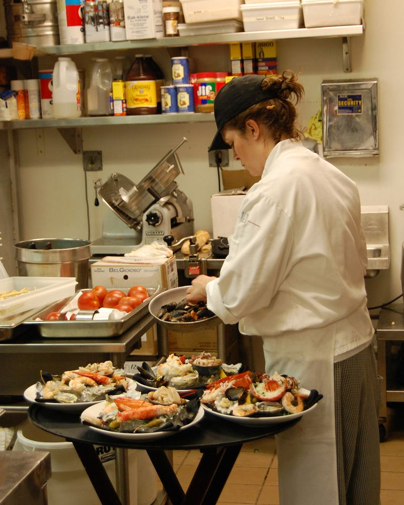
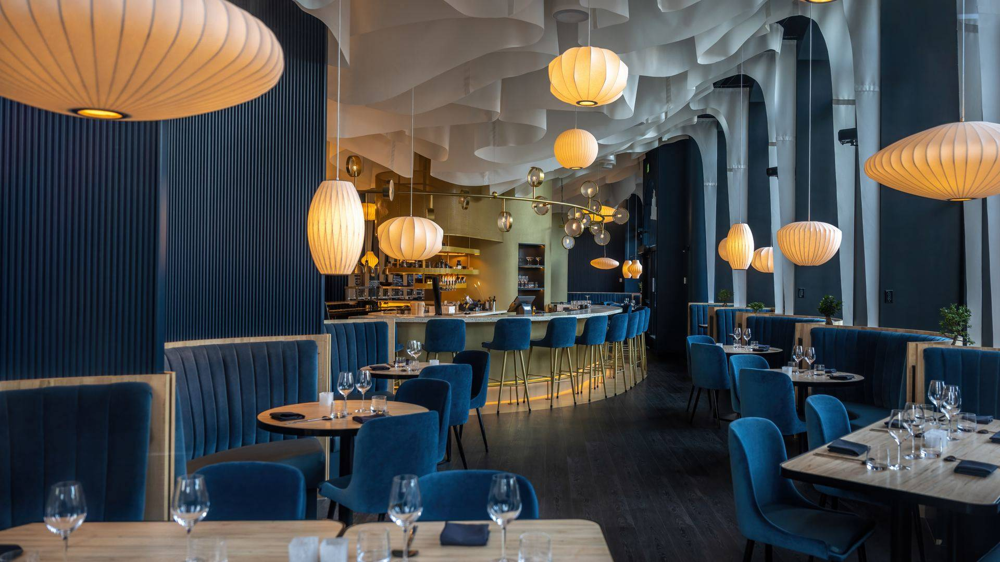
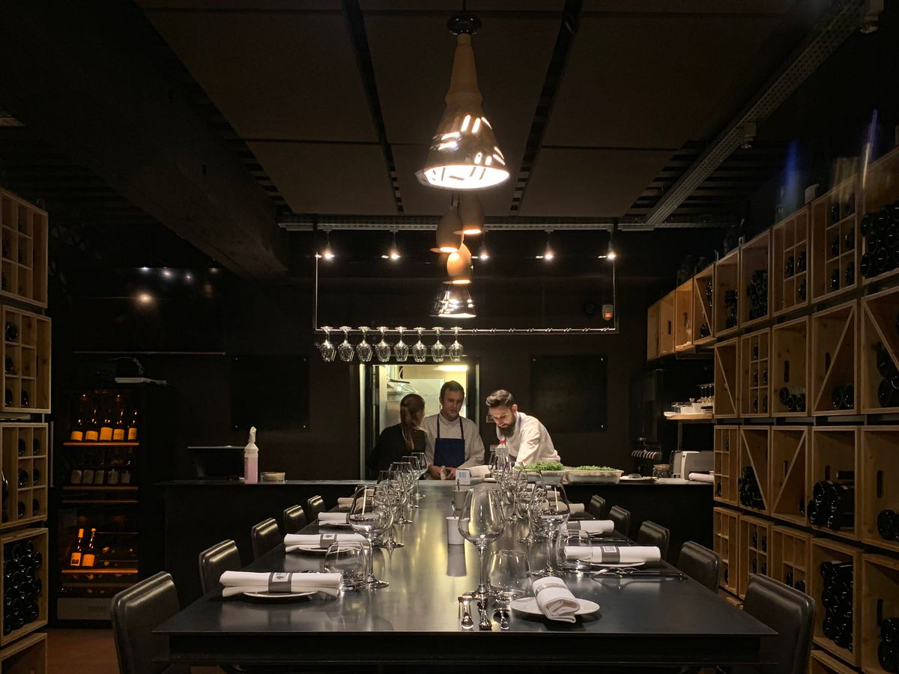
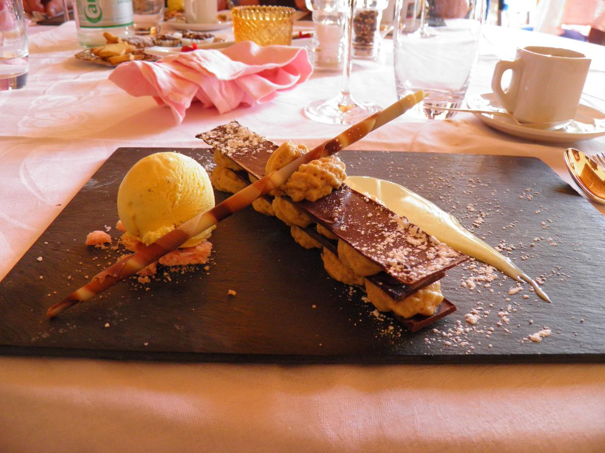

First dish
$00
Two lines. What it is, and the one thing in it worth naming.
Vegetarian
Open Wednesday to Sunday
One sentence. What kind of cooking, and who it is for. Not "an unforgettable culinary journey" — say what is actually on the plate.
This week
Two sentences of context. What changed on the menu, and why.

$00
Two lines. What it is, and the one thing in it worth naming.

$00
Two lines. What it is, and the one thing in it worth naming.

$00
Two lines. What it is, and the one thing in it worth naming.
Since 20XX
A paragraph about the people, not the ambience. Who cooks here, what they cooked before, what they are stubborn about.
A second paragraph, shorter. End on something specific: a supplier, a grandmother, a piece of equipment nobody else has.

"A sentence the head chef would actually say."
— Their name, head chef
Inside
Two sentences. What it feels like to sit here, and what you would notice first.



00
guests at one table
Private dining
Who it is for, how many it seats, and what you need to know to ask for it.
One real sentence somebody actually said about this place.